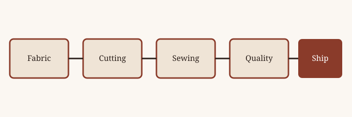

Our Supply Chain
Every House of Gianna piece follows the same five-step path, with checks along the way.

Sourcing
We carefully select our materials and partners to ensure the highest quality and ethical standards. You can see the fabrics that result in our Poise & Pose and OSE collections.
Production
Our production process is designed to minimize waste and maximize efficiency while maintaining the highest quality standards.
Quality Assurance
We have a rigorous quality control process to ensure every piece meets our high standards. Our founder's background in procurement and supplier management shapes how we set those standards.
Delivery
We offer fast and reliable delivery options to get your favorite pieces to you quickly and safely. If you have a question about an order, send us an inquiry through the contact form.